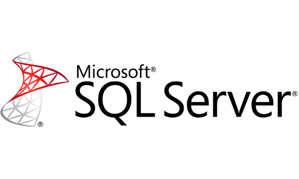
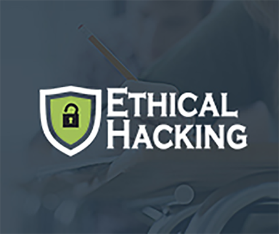

Android is an open source project of the Open Handset Alliance that has revolutionised the user experience of a mobile device.Android is a platform for mobile devices, which includes an OS, middleware and some key applications. The OS is based on a variant of Linux Kernel.The biggest advantage is that the success of Android depends on the availability of unique and engaging user applications created by developers.
This 50 hours training program will help the learner to understand the basics of android platform which allows trainees to developer android mobile applications. This course will leads learner to expertise in application development using JAVA language. Along with the android application development this course will improves your java programming skills on java event handling mechanism, dynamic binding, multithreading and many more.
On completion of the training, participants will be able to build user interactive application for android mobile devices using Android SDK with Android Studio IDE.
You can get certifications and Training certificate along with project letter from RCPL on successful completion of the program.
Certifications put you on the path to career enhancement and greater success in your chosen profession. Take advantage of a full suite of progressive benefits while increasing your knowledge, effectiveness and marketability.
Microsoft Office 360 training courses at CODEGEN offer you the latest version of MS Office Suite along with various upgrades to make your work easier and more streamlined. Taking up MS Office 360 certifications will not only make you aware of all the new tools and functions available but also help you make the most of your Office operations. The course focuses on Word Expert training, Outlook Expert training, Excel Expert training and PowerPoint training.
Microsoft Office is the leading suite offering state of the art productivity tools for the business world. Hence, Microsoft Office certifications provide you an edge over others as these certifications are industry standard and accepted by employers worldwide. In fact, your chances of getting employed increases 5 times as per Microsoft.
According to Microsoft, a Microsoft certified employee can earn as much as 15% more than an uncertified co-worker. In fact, an entry-level employee can earn as much as $16,000 more annually in high-growth industries.
These certifications also help you achieve greater productivity and perform complex tasks, therefore, making you eligible for salary hikes and promotions.
Who Should do This Course?
The prerequisites for this course are nothing more than basic computer skills.
This course is especially popular among students as they have recognized its importance and wish to choose a technology that helps them plan a better career. However, anyone who wants to brush up their skills or find a suitable job can apply for this course or certification.
Professionals who have benefited from this course are teachers, researchers, officers, auditors and accountants, to name a few.
For MS-Office You will get Training certificate and Project letter from Microsoft on successful completion of the program. It put you on the path to career enhancement and greater success in your chosen profession. Take advantage of a full suite of progressive benefits while increasing your knowledge, effectiveness and marketability.

CODEGEN provides Best SQL Server Training as per the current industry standards. Our training programs will enable professionals to secure placements in MNCs. CODEGEN is one of the most recommended SQL Server Training Institute that offers hands on practical knowledge / practical implementation on live projects and will ensure the job with the help of advance level SQL Server Training Courses. At CODEGEN SQL Server Training is conducted by specialist working certified corporate professionals having 8+ years of experience in implementing real-time SQL Server projects.
Microsoft SQL Server is a relational database management system developed by Microsoft. As a database server, it is a software product with the primary function of storing and retrieving data as requested by other software applications—which may run either on the same computer or on another computer across a network (including the Internet).
Microsoft markets at least a dozen different editions of Microsoft SQL Server, aimed at different audiences and for workloads ranging from small single-machine applications to large Internet-facing applications with many concurrent users.
CODEGEN recognized among the top ten MySQL training institute, has training module for beginners, intermediates, and experts. Whether you are a college student, I.T professional or a project manager; the best MySQL training institute offers best training environment, veteran MySQL trainers, and flexible training schedules for entire modules. Also, the best training institute for MySQL training asks for a value to money fee from the students. The pocket-friendly MySQL course fee structure can be afford by students coming from all walks of life.
Red Hat Linux Essentials and Administration is designed for beginning Linux systemadministrators who are interested in learning essential system administrationskills for Enterprise Linux. The class provides-hands-on training toeffectively use, customize, and script common command line utilities. Inaddition, administrators will learn how to perform essential systemadministration tasks including basic installation, package management, and usermanagement procedures.
Basics of Linux, User management, DiskManagement, Package Management, Server Management, Security Implementation,Scripting.
Advance Concepts of Networking
Basics of Network, Understanding Cables, Understanding Protocols which we use over internet, OSI Model, Creating Network using Router and Switches, Routing, Switching, Security Implementation on Router and Switch, Wi-Fi, use of IP Addressing IPV4 & IPV6 (Classfull and Classless).Basics of Network, Understanding Cables, Understanding Protocols which we use over internet, OSI Model, Creating Network using Router and Switches, Routing, Switching, Security Implementation on Router and Switch, Wi-Fi, use of IP Addressing IPV4 & IPV6 (Classfull and Classless).
Basics of Linux, User management, Disk Management, Package Management, Server Management, Security Implementation, Scripting

Ethical Hacking with Networking Securities program is focusing on latest security threats, advanced attack vectors and practical, real time demonstration of latest hacking techniques, methodologies, tools, tricks and security measure.
This course is designed for students who wants to go in field of Cyber Security or Network Security Analyst. CEH is a comprehensive Ethical Hacking and Information Systems Security Auditing program focusing on latest security threats, advanced attack vectors and practical, real time demonstration of latest hacking techniques, methodologies, tools, tricks and security measures.
This course focuses on the latest hacking attacks targeted to mobile platform, tablet computer and cloud and, covers countermeasures to secure mobile and cloud infrastructure.Prerequisite
Also this Course will significantly benefit security professionals, security officers, auditors, site administrators, web programmers and anyone who is concerned about the integrity of the Network infrastructure.
For FLASH You will get Training certificate and Project letter from CODEGEN & ISSCON on successful completion of the program. It put you on the path to career enhancement and greater success in your chosen profession. Take advantage of a full suite of progressive benefits while increasing your knowledge, effectiveness and marketability.